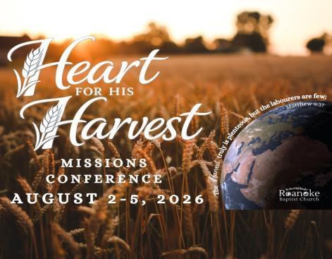
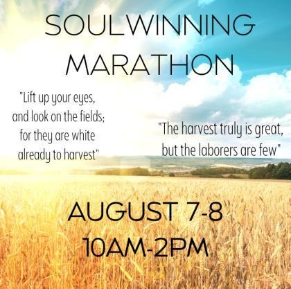
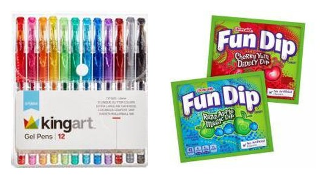

August 2026 Issue
"Rooted and built up in him, and stablished in the faith, as ye have been taught, abounding therein with thanksgiving." Colossians 2:7
Mike TarrPastor
James BradleyOutreach Director
Jon LakieYouth Pastor
Jason TarrAssistant Pastor

Missions ConferenceHeart For His Harvest
August 2-5, 2026 - Fellowship after the Sunday evening service
Welcome the Chadwick, Owens, Palmani, and Simmons families to our Missions Conference. Sign up on the bulletin board as soon as you can if you would like to take any of the missionaries out for a meal.
RBC Teens

August 7-8
Soulwinning Marathon · 10:00 AM to 2:00 PM
August 19
Truth and Training · 7:00 PM
August 22
Service Activity · 10:00 AM to 12:30 PM
Soulwinning
August 5, 12, 19, 26 · 3:30 PM
Roanoke Baptist School News
- School starts on Thursday, August 20, and is a half day with noon dismissal. Please be sure your students have all of their supplies for the first day.
- A short parent-teacher meeting will be held on Sunday, August 23, at 5:00 PM in the library. Child care will be provided in the gym during the meeting.
Soulwinning & Prayer
- Sunday evenings at 5:30 PM. Men pray in the Preacher's office, ladies in the Multi-Purpose Room.
- Saturday Men's Prayer at 9:00 AM on August 1, 22, and 29.
- The prayer breakfast is canceled for August.
Upcoming Events
July 31
North of 62: Dixie Boat Ride
August 1
Ladies Meeting in Plymouth
August 2-5
Missions Conference
August 7-8
Soulwinning Marathon
August 7
North of 62: King's Brass
August 20
First Day of School · half day
August 22
Teen Service Activity
August 23
Parent-Teacher Fellowship · 5:00 PM
International Appetizer & Sweets Fellowship
- Sunday, August 2. Bring an internationally inspired appetizer or dessert to share.
- Please bring food into the gym before the evening service, and be sure your name is on all of your dishes and utensils.
Missions Spotlight

We are collecting items for missionary packets through October 18: gel pens and Fun Dip. Thank you for your participation.
Church Family
Birthdays and anniversaries for the month are shared with our church family in the printed Torch available at the church.
Zelle Electronic Giving
rbczelle@gmail.com